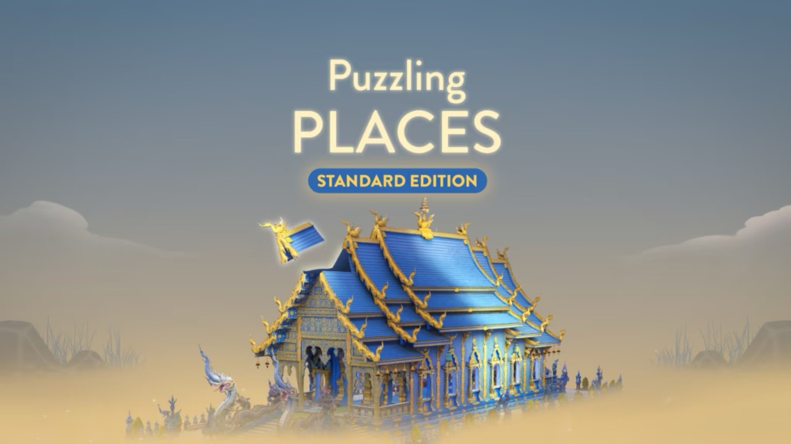
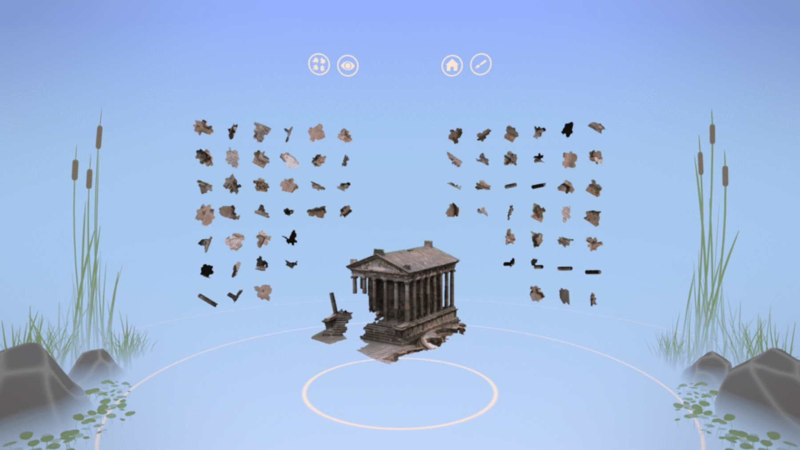
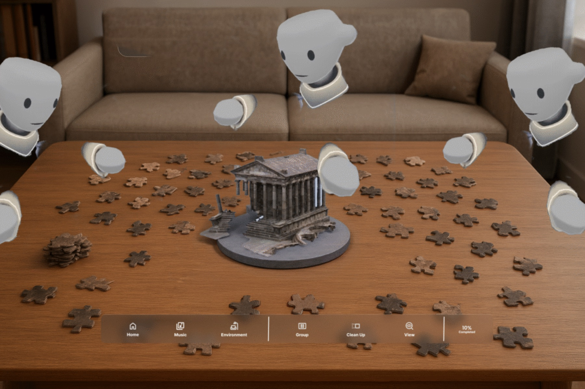

Case study · 3D work · UX design
Puzzling Places
A meditative 3D jigsaw game for VR, built from photogrammetry of real places, with an interface rebuilt to feel familiar and truly native to VR.
Section 1
Bridging 2D habits and a 3D world
The gameplay is deeply immersive, but the interface was rooted in early VR conventions: functional, with weak visual hierarchy and usability.
VR interfaces have to balance spatial depth with legibility, yet players still bring expectations from 2D design. My task was to modernise the UI so it feels intuitive, visually coherent, familiar and native to VR at once.

Section 2
What the old design got wrong
- The menu floats at the top, out of easy reach.
- You can't see your puzzle partner.
- Icons are unlabelled, so navigation is unclear.
- The space doesn't feel like doing a jigsaw with friends.
- There is only one music option.

Section 3
Small updates, big relief
- A progress indicator. Pieces left behind your point of view are easy to forget, so you think you're done when you're not.
- Room and host details. Showing where a puzzle in progress is stored lets players log back in and carry on.
- Anyone can resume. The backend needed to let any player reopen a room. Today the host must log in first, so a dead headset battery ends the session.

Section 4
The north star
A puzzle table that feels like the real thing, with controls where your hands expect them.
- At least four players sit around a table, like a real puzzle night.
- The menu moves to the bottom, within easy reach.
- Clear labels, grouped into Settings control and Puzzle control.
- A circular progress indicator confirms when the puzzle is truly finished.